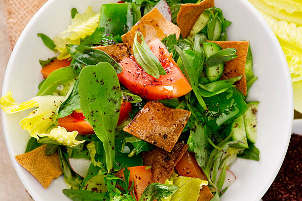

Fattouch Recipe

Description
Ingredients
- 1 Romaine Lettuce
- 3 Tomatoes
- 3 Cucumbers
- 1 parsley
- 1 orange, yellow or green bell pepper
- Salt, Olive oil,Lemon juice, Dried mint
- Pita Chips or Croutons
Steps:
- Wash all the vegetable
- Cut all vegetables into medium pieces & put in a bowl
- Add salt, lemon juice, olive oil and dried mint to taste
- Serve in a bowl and add pita chips or croutons on top
Bon Appetit!